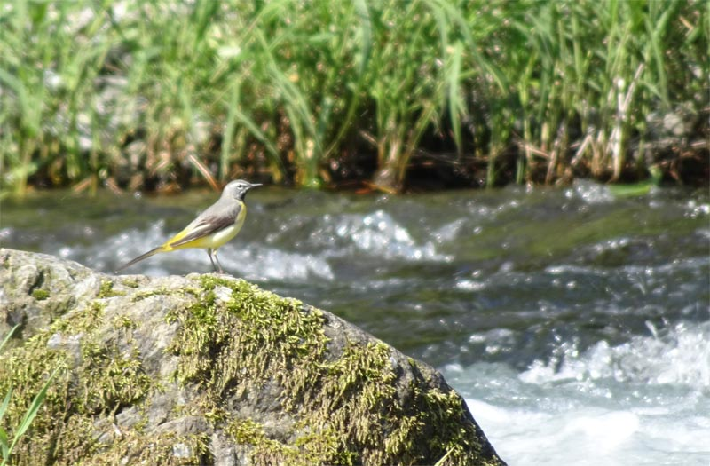

ラブル: ヴァイオリンソナタ
これはだいぶ前にマニャールの『ヴァイオリンソナタ』を同じヴァイオリンのロランソー/ピアノのトリンドルの演奏で聴いていたのでお勧めに出てきたものと思われる。ヴァルター・ラブルは1873年ウィーン生まれのの音楽家。この『ヴァイオリンソナタ』は出版が1899年であり20代での作曲かと思われる。深みがないとか進取の気概に欠けるとかいって退けるのは容易であるが、陰りのないプラスの活力を発散させているのは美点であると思う。それについては演奏の良さによってかなり助けられている面もありそうで、両楽器共にマニャールのソナタと同じく雄渾で勢いがあり、時に優美に、時にユーモラスに、しかし品格を失うことのない美音で作品の各所に光を与えている。迫力もある。ちなみに、この曲の第1楽章はシューマンの交響曲第3番（『ライン』）にちょっと雰囲気が似ている。
Walter Rabl: Violin Sonata in D Major,
Op. 6
Geneviève Laurenceau (vn)
Oliver Triendl (pf)
(2012)
このアルバムの冒頭に入っている『クラリネット四重奏曲』はラブルの第一作で、それに関しては他にもいくつか録音があるようだ。だが個人的には『ヴァイオリンソナタ』の方が好みだ。ラブルは30歳で作曲をすっぱりと止めてしまったので、これらの作品を出発点として大成に至る軌跡というものを辿ることはできない。かといってこれくらいの年齢で夭折した名だたる作曲家と比べてしまうと、やはり突出した個性が作品に刻み込まれているとは言い難い。そこが最も引っ掛かるのだが、とはいえ、作曲家が中途で何を投げ出したのかを詮索することなどは抜きにして、この時代この場所にこういう作品があったということだけを直接聴いて楽しめるのも、いやそれこそが本当の贅沢なのかもしれない。

(Jun. 15, 2024)